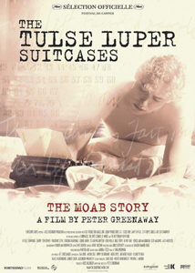
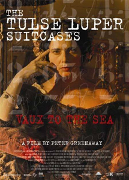
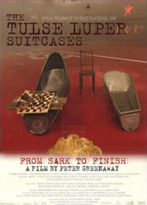
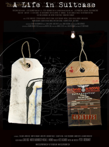
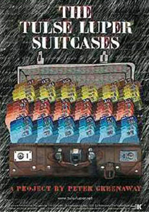
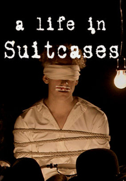

2003
-
2005

The Tulse Luper Suitcases is a multimedia project by Peter Greenaway, initially intended to comprise four films (three "source" and one feature), a 16-episode TV series and 92 DVDs, as well as web sites, CD-ROMs and books. Once the online web-based portion of the project was completed, the "winner" having taken a trip following Tulse Luper's travels (and often imprisonment) during his first writings about the discovery of uranium in Moab, Utah in 1928 to his mysterious disappearance at the fall of the Berlin Wall in 1989, the final, feature film was released. Two books and three feature films were released to supply material to the Flash/Web designers who competed in a contest to make one of the 92 Flash-based "suitcase" games featured on the interactive, online site The Tulse Luper Journey.
Tulse Luper / Floris Creps
Sophie van Osterhaus
Madame Plens
Jan Palmerion
Monsieur Moitessier
Sesame Esau
Percy Hockmeister
Julian Lephrenic
Erik van Hoyten
Sheriff Fender
Luper Authority
May Jacoby
Hercule
Virgil de Selincourt
Guam Ravillion
Mrs. Moitessier's Father
Mrs. Fender



Three films, The Tulse Luper Suitcases, Part 1: The Moab Story, The Tulse Luper Suitcases, Part 2: Vaux to the Sea and The Tulse Luper Suitcases, Part 3: From Sark to the Finish were released in 2003, although they were shown out of order, with Part 1 shown in 2003, Part 3 in early 2004 and Part 2 in summer 2004. Part 1 was entered into the 2003 Cannes Film Festival. All three were initially released only on DVDs made in Spain to provide "back-story material" for the designers working on the online site's "suitcases", chosen from submissions in a contest held in 2004. The trilogy was later released as a box set in Australia in 2008.
There are also two books, Tulse Luper in Turin and Tulse Luper in Venice, published in 2004, for the same purpose. In 2005, after the winner of the online game finished a free trip following the travels of Luper, an additional final feature, A Life In Suitcases (subtitled The Tulse Luper Journey) was released.


